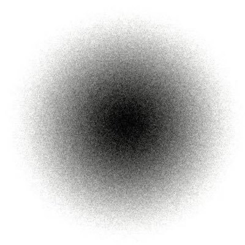

⛄ALLice🌈赛博幽灵
@GrievousPotato1
@Zarathustra8964 很反直觉的是，拥有ASPD特质的人不一定反社会，ASPD只是像色盲一样的“感情盲”，ASPD的感情都是建立在逻辑上的，而所谓正常人的情感更自动且更偏向直觉。
而且世界上根本没有那么多ASPD，更不可能形成ASPD厕这种东西，所以我敢断定里面的人单纯只是觉得反社会很酷跟风罢了，觉得弱智是很正常的

查拉图斯特拉.
@Zarathustra8964
转发一下我的QQ空间在推特
人是复杂的
我喜欢战争、一切生物的虐杀、纳粹…..道德和法律是人虚构出来的东西，地球根本没有这样限制我们，所以我在观看这些东西的时候感觉有“冲破”的自由感
但是这个ASPD测投稿的人也太弱智了吧 https://t.co/8XgzIhdzqC